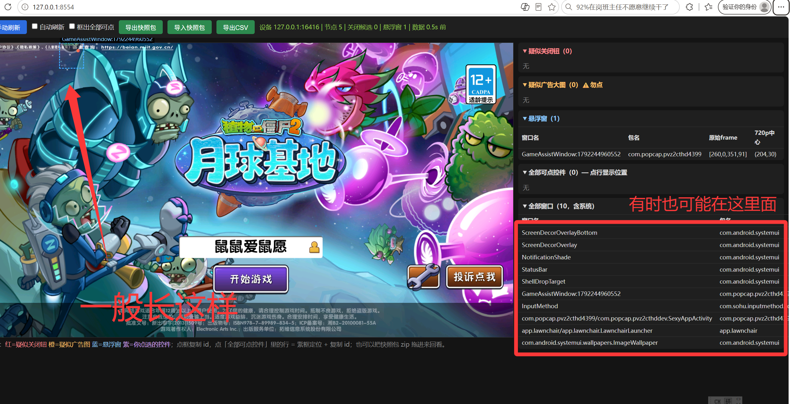

# 🪟 获取悬浮窗的 UI 控件 ID
配合「开始登录 → 关闭悬浮窗」功能使用 · 预计阅读时间: 3 分钟ℹ️ 这个页面是干什么的？
「关闭悬浮窗」功能依靠控件的 resource-id 来定位并点击悬浮球上的关闭按钮。目前只适配了（截至 10.16）：4399 / 华为。
如果你的渠道服悬浮球未被适配，可以用我们提供的小工具 广告侦察镜 抓取一份快照包发给开发，等待适配。
# 下载工具
点击下面的链接下载「广告侦察镜」（单文件 exe，无需安装）：
# 使用教学
-
在模拟器开启的时候，把游戏停在有悬浮球的界面（比如登录界面），然后双击打开
广告侦察镜.exe，并关闭「自动刷新」。 -
点击「手动刷新」，直到显示的图片上包含了悬浮球为止。
-
点击「导出快照包」，把导出的快照包发给开发者（QQ：3363000697），或者去 提交 Issue。

▲ 广告侦察镜抓取界面示例：手动刷新，直到画面中包含悬浮球
# 重要提醒
⚠️ 一定要描述悬浮球的关闭方式！
发快照包时，务必详细描述你的悬浮球是怎么关闭的，例如：
- "把悬浮球拖入关闭区域后，会显示一个弹窗，需要额外点击确认才能关掉"
- "点击悬浮球后展开菜单，里面有关闭按钮"
这些信息非常重要！快照只能告诉开发"点哪里"，而关闭的完整流程（拖动、弹窗、二次确认……）只有你能告诉我们。
# 反馈渠道
- 开发者 QQ：3363000697
- GitHub Issue：MaaPvz Issues
- 聊天群：669689256 ｜ 开发群：1092806752
反馈时请带上：快照包 + 渠道服名称 + 悬浮球关闭方式的详细描述。信息越完整，适配越快 🙏